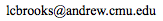
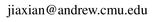
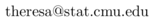
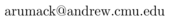
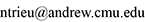

December 2016: CDC has just named us “Most Accurate Forecaster” for 2015-2016. (Results )
October 2017: We did it again! Our two systems took the top two spots out of 28 submissions in the 2016-2017 flu challenge. (Results )
October 2018: and yet again! Our forecasting systems took #1 in each of the three separate flu forecasting challenges of 2017-2018 (out of up to 30 submissions). (Results )
Mission
Epidemiological forecasting is critically needed for decision making by public health officials, commercial and non-commercial institutions, and the general public. The Delphi group at Carnegie Mellon University focuses on developing the technological capability of epi-forecasting, and its role in decision making, both public and private. Our long term vision is to make epidemiological forecasting as universally accepted and useful as weather forecasting is today.
Operational Systems
-
Geographically detailed real-time estimates (nowcasts) of Influenza-Like-Illness: ILI-Nearby
-
Weekly forecasts of Influenza-Like-Illness nationally and in 10 U.S. regions: Delphi's forecasts
-
‘Wisdom-of-Crowds’ forecasting of the flu: Epicast
Activities
We have participated, and have done very well , in all epidemiological forecasting challenges organized by the U.S. government to date:
-
"Predict the Flu" Challenge (by CDC) : 2013--2014, 2014--2015 (winner), 2015--2016 (winner) , 2016--2017 (winner) 2017--2018 (winner)
-
Forecasting Dengue in Puerto Rico and Peru (by the White House Office of Science and Technology Policy )
-
Forecasting the Chikungunya invasion of the Americas (by DARPA )
Members
Roni Rosenfeld
Homepage
Ryan Tibshirani
Homepage
Logan Brooks

David Farrow
Jiaxian (Chris) Sheng

Maria Jahja
Homepage
Theresa Gebert

Aaron Rumack

Nicholas Trieu

Steven Abreu
Homepage
We are faculty and students at Carnegie Mellon University (some alumni ). We are also part of a larger, University of Pittsburgh-based MIDAS National Center of Excellence , which includes epidemiologists, virologists, public health experts, infectious disease MDs, legal and economic experts, and other computationalists.
Publicly Available Tools
-
Epidemiological Forecasting R Package: epiforecast-R
-
Epidemiological Nowcasting via sensor fusion: nowcast
-
Epidemiological time series visualizer: EpiVis
-
API to automatically updated epidemiological data sources: Epi-Data
-
Visual comparison of scored submissions to CDC's "Predict the Flu" Challenge (provide your own score files): FluScores
-
Epidemiological modeling utilities , e.g. date/epi-weeks conversions
(also available via a web interface from EpiVis )
Source codes are freely available on GitHub .
Ongoing Research Projects
-
In-season epidemiological forecasting via statistical machine learning
Our 2015 PLoS Computational Biology paper, Flexible Modeling of Epidemics with an Empirical Bayes Framework , describes the Empirical Bayes methodology we developed and its application to in-season forecasting of flu in the U.S. See also our 2014 PLOS Neglected Tropical Diseases paper on applying this methodology to in-season forecasting of dengue in Brazil. A manunscript describing our most recent ensemble system (#1 performer in the 2015 —2016 Predict the Flu challenge) is under preparation.
-
‘Wisdom-of-crowds’ forecasting
Another one of our goals is to establish a strong baseline forecast to which data-driven forecasts can be compared. For chikungunya (in 2015) and influenza (ongoing since 2014), we achieve this baseline through periodic collection of simple, subjective forecasts from the general public, using a graphical interface we created specifically for this purpose. With these user-submitted assessments we create aggregate, probabilistic weekly forecasts, both as a performance baseline for comparison with data-driven methods and also as a serious attempt to forecast the spread of these diseases. A manuscript describing the Epicast system was published in our 2017 PLoS Computational Biology paper, A human judgment approach to epidemiological forecasting . See also this section of David Farrow's thesis .
Join in! We are always looking for more participants, so please check out Epicast (http://epicast.org) - and feel free to invite others to do so as well. No special skills or background are required, and the top epicasters are featured on the leaderboards !
-
Nowcasting by sensor fusion
We use diverse sources of information about the prevalence of Influenza-Like-Illness (ILI) in various geographic areas of the US. Our flu sensors include: Google flu-related search queries, Twitter flu-related tweets, Wikipedia flu-related article access, and CDC flu-related web site access. To these we add a variety of flu prediction models. These sources (sensors and predictors) vary in their geographic granularity (metro areas, U.S. states, multi-state regions, entire US), their temporal granularity (daily or weekly), their noise (error) characteristics, and their correlation with one another. We use sensor fusion theory to optimally combine them in real-time. For more details, see the "about" page in ILI-Nearby . For more mathematical detail, see the nowcasting chapter in David Farrow’s PhD thesis .
Documents
-
Roni's Proposal for Standardized Evaluation of Epidemiological Models whitepaper (Last Revised: 09 November 2012)
-
Roni's Predicting The Predictable presentation
We are thankful for generous financial support from